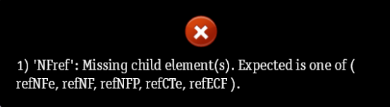

 Pode ocorrer ao enviar uma NFe de DEVOLUÇÃO. Algumas soluções estão descritas abaixo. Identifique qual se encaixa o seu caso e altere conforme informado:
- Localize a primeira compra do produto e mude o tipo de comprovante para Nota Fiscal Eletrônica. Insira o número de nota e a chave de acesso.
- Caso não tenha a chave de acesso, mude o tipo de comprovante para Nota Fiscal e insera o número de nota.
- Caso o tipo de movimento já esteja como NOTA FISCAL, verifique se o número da nota está iniciando com zeros e remova-os. Ex. 005962 (errado) > 5962 (certo)
Após a correção, salve a movimentação e realize o envio da nota fiscal novamente.